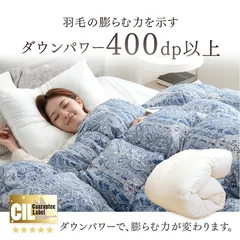
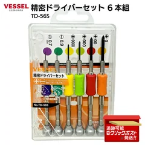

研げば戻る刃物
貝印 関孫六
匠創 三徳包丁 165mm
刃渡り165mm・オールステンレス一体型・食洗機対応
¥2,919税込・2026年9月20日時点
同じ種類の物を使った人の声
- 特別な物ではないけれど、研げばずっと切れる、という声
- 持ち手までステンレスだと、境目に汚れがたまらないので洗うのが楽、という人も
気になる声研がないまま使うと、半年で切れなくなって引き出しの奥に入ることになります。研ぐ手だては先に決めておくのがよさそうです
販売価格・容量・送料はリンク先でご確認ください
暮らしの道具 / 2026.09.20
YouTubeの動画で取り上げた11品です。動画では18の話題を出して、そのうち包丁・鉄のフライパン・圧力鍋・爪切りの4つを、戻ってくる理由と気になる点まで詳しく話しています。一生モノかどうかは買うときの値段では決まらない、直せるか・部品が替えられるか・手入れが続けられるか・出番があるか、という回です。研ぎ直し・削り直し・仕立て直しでお金をかけずに戻せる話や、一生モノとして買わなくてよかったという声も入れています。
11 ITEMS 動画で紹介したもの
価格は2026年9月20日に楽天の検索結果で確認した税込です。色・サイズ・在庫・お店によって変わります。買う前にリンク先でご確認ください。
Amazonのボタンがあるものは、同じ型番の商品へのリンクです。価格はお店ごとに違うので、リンク先でご確認ください。
「使った人の声」は、同じ種類の物（包丁・鉄のフライパン・羽毛布団など）についての書き込みをもとにした要約で、この商品そのものの感想とは限りません。
長く使えるかどうかは、使う回数と手入れで変わります。出番が少ない物は、今ある物で足りることもあります。
刃物を研ぐとき、研ぎに出すときは、それぞれの取扱説明書とお店の案内に従ってください。電気製品を開けるときは必ず電源を抜き、ガスと水まわりはご自身でさわらず専門の業者にご相談ください。
貝印 関孫六
刃渡り165mm・オールステンレス一体型・食洗機対応
¥2,919税込・2026年9月20日時点
同じ種類の物を使った人の声
気になる声研がないまま使うと、半年で切れなくなって引き出しの奥に入ることになります。研ぐ手だては先に決めておくのがよさそうです
販売価格・容量・送料はリンク先でご確認ください

貝印 関孫六
手動・3面（荒・中・仕上げ）・日本製
¥1,595税込・2026年9月20日時点
同じ種類の物を使った人の声
気になる声砥石でしっかり研ぐのとは別物です。本格的に直したいときは、研ぎを受け付けているお店に出す人もいます
販売価格・容量・送料はリンク先でご確認ください

貝印 関孫六
刃物メーカーの爪切り・カバー付き
¥1,480税込・2026年9月20日時点
同じ種類の物を使った人の声
気になる声新しい物に替えてみたら、使いにくかったり爪が鋭くなりすぎたりして、もとに戻った、という声も。手の大きさと爪の厚さで合う合わないが出ます
販売価格・容量・送料はリンク先でご確認ください

リバーライト
26cm・窒化処理・IH対応・日本製
¥6,050税込・2026年9月20日時点
同じ種類の物を使った人の声
気になる声26cmは重さがあります。片手でふるのはしんどい、年をとったら軽い物に替えると思う、という声も
販売価格・容量・送料はリンク先でご確認ください

ティファール
6L・4〜6人用・IH／ガス火対応・パッキン交換可
¥20,988税込・2026年9月20日時点
同じ種類の物を使った人の声
気になる声大きいので置き場所を取ります。出しっぱなしにできる場所がないと、出番が減るという声も
販売価格・容量・送料はリンク先でご確認ください

ストウブ
20cm・鋳物ホーロー・フランス製
¥25,999税込・2026年9月20日時点
同じ種類の物を使った人の声
気になる声重いのが玉にきず。ふただけで腕にくる、という声も。置き場所を決めてからがよさそうです
販売価格・容量・送料はリンク先でご確認ください

—
32×22cm・桧・立てて乾かせる
¥1,990税込・2026年9月20日時点
同じ種類の物を使った人の声
気になる声削り直しをお店に出すとお金がかかります。近くに頼める所があるかは先に調べたほうがよさそうです
販売価格・容量・送料はリンク先でご確認ください

柳宗理
19cm・ステンレス・穴あきタイプ
¥1,870税込・2026年9月20日時点
同じ種類の物を使った人の声
気になる声穴が大きめなので、細かい物をこすには向きません。用途で使い分けている人もいます
販売価格・容量・送料はリンク先でご確認ください

岩鋳
320ml・南部鉄器・直火可
¥9,900税込・2026年9月20日時点
同じ種類の物を使った人の声
気になる声使い終わったら火にかけて中を乾かします。それを忘れるとさびる、という声も
販売価格・容量・送料はリンク先でご確認ください

—
シングル・ダウン93%・日本で仕立て
¥21,999税込・2026年9月20日時点
同じ種類の物を使った人の声
気になる声仕立て直しにもお金はかかります。中の羽根の状態によっては戻らないこともあるので、お店に見てもらってからになります
販売価格・容量・送料はリンク先でご確認ください

ベッセル
6本組・小さいねじ用・ケース付き
¥1,680税込・2026年9月20日時点
同じ種類の物を使った人の声
気になる声電気製品を開けるときは必ず電源を抜いてください。ガスと水まわりは、ご自身でさわらず専門の業者にご相談ください
販売価格・容量・送料はリンク先でご確認ください
SOURCE & NOTES
2026年9月20日に確認